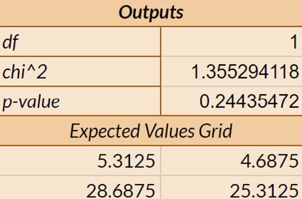
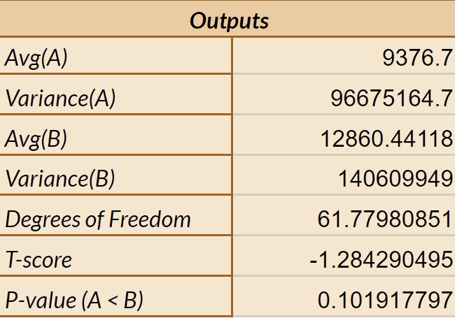
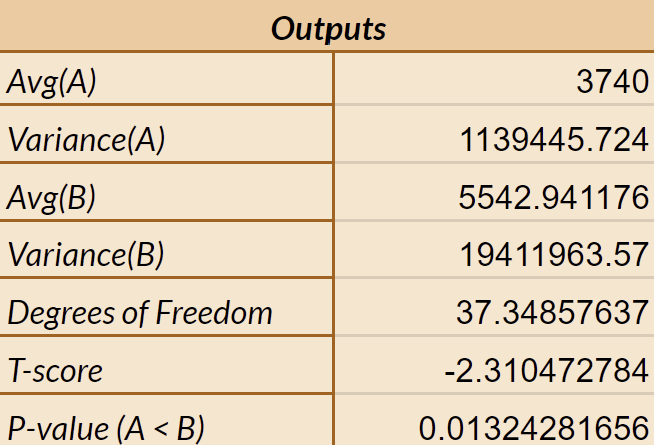

A/B testing, also known as split testing, is a valuable technique used by designers to compare two or more versions of a design element or user experience to determine which version performs better at achieving a specific goal. Designers can use this test to optimize user experience, iterate design improvements, reduce development costs, etc.
A/B testing allows direct, side-by-side comparisons between two versions of a design. This helps to understand which version will lead to better results based on predefined metrics. In addition to this, A/B testing helps validate hypotheses about user behavior and preferences. By formulating hypotheses based on qualitative research or intuition and testing them through A/B testing, I can gain insights into what really drives user behavior. In this project, I conducted A/B testing on two different user interfaces and used user data to analyze whether the assumptions I had made were supported by enough evidence. These assumptions are whether the new interface will affect the user's misclick rate, time on page, and time to first click. Finally, some analysis is done on the data to draw relevant conclusions about statistics.
The purpose of this project is to use A/B testing to compare two different versions of a web page to determine which metrics will be affected by different designs. As a result, I can use the conclusions I draw to optimize the user experience, validate better design methods, and make iterative improvements to the web page.
Image for the change I made to the interface in the studio:
Null hypothesis
Different UI designs have no impact on misclick rate.
Alternative hypothesis
The design of the new interface will reduce the misclick rate.
Prediction for null htpothesis
I predict that this null hypothesis can eventually be rejected because the new interface may make the target button more eye-catching, which may have an impact on the misclick rate.
Reasoning behind the alternative hypotheses
The new interface differentiates elements that are similar on the original interface to ensure that users can accurately click the buttons they want, thus reducing the misclick rate.
Describe which test you chose and why
I choose kai squared test because there are two categories in each version, which is not continuous, but categorical.
State whether the difference between versions A and B with respect to the metric is statistically significant
It is not statistically significant.
Include a description of any important values (i.e., t-score, p-value, degrees of freedom, chi-squared statistic) calculated from the test and what they tell us
| chi-squared | 1.35529 |
| p-valued | 0.24435 |
| df | 1 |
The chi-squared value shows that there exist some differences between two versions of interface. The p-value shows that there is 24% chance that the two versions are the same. The df value represents the number of categories in the data set that can vary freely, that is 1.
Conclude whether you reject or fail to reject your null hypothesis
I fail to reject the null hypothesis based on the given data because the p value is greater than 0.05. The chi-square statistic (1.35529) by itself doesn't determine whether I can reject the null hypothesis; it's the p-value that's used for this purpose. The chi-square statistic is merely an indicator of how well the observed data fit the expected distribution under the null hypothesis.
Outputs
Null hypothesis
Different UI designs have no impact on time on page.
Alternative hypothesis
The design of the new interface will reduce the time on page.
Prediction for null htpothesis
I predict that this null hypothesis can eventually be rejected because the new interface may provide some more guiding factors on it, which may allow users to complete tasks faster.
Reasoning behind the alternative hypotheses
Because there are more guiding prompts on the new interface, such as highlighting the name that the user is searching for, this will shorten the time for users to find the name they want, which means that it will shorten the time they stay on the current page.
Describe which test you chose and why
I choose one-tailed t-test because the time on page is a number, and it is numerical and continuous value.
State whether the difference between versions A and B with respect to the metric is statistically significant
It is not statistically significant.
Include a description of any important values (i.e., t-score, p-value, degrees of freedom, chi-squared statistic) calculated from the test and what they tell us
| t-score | -1.28429 |
| p-valued | 0.10192 |
| df | 61.7798 |
The t-score shows that the time on page for two interfaces are different. The p-value shows that there is about 10.192% chance that the two versions are the same. The df value represents the number of independent observations that can be used to estimate the parameter, that is about 62.
Conclude whether you reject or fail to reject your null hypothesis
I fail to reject the null hypothesis because the t-score and p-value indicate that the time on page for different interfaces are different, and they are likely the same. Overall, it's the p-value that directly determines whether I reject the null hypothesis. Since the p-value is greater than the significance level, I cannot reject the null hypothesis.
Outputs
Null hypothesis
Different UI designs have no impact on time to first click.
Alternative hypothesis
The design of the new interface will reduce the time to first click.
Prediction for null htpothesis
I predict that this null hypothesis can eventually be rejected because the operation of the new interface may be different from the original one, which will affect the time of the user's first click to a certain extent.
Reasoning behind the alternative hypotheses
Because the new interface has more guided prompts, users are more likely to quickly find the corresponding button and complete the task. In other words, the new interface will speed up the reservation process, which means users will make the first click more quickly.
Describe which test you chose and why
I choose one-tailed t-test because the time to first click is a number, and it is numerical and continuous value.
State whether the difference between versions A and B with respect to the metric is statistically significant
It is statistically significant.
Include a description of any important values (i.e., t-score, p-value, degrees of freedom, chi-squared statistic) calculated from the test and what they tell us
| t-score | -2.3105 |
| p-valued | 0.013243 |
| df | 37.3486 |
The t-score shows that the time to first click for two interfaces are different. The p-value shows that there is about 1.3243% chance that the two versions are the same. The df value represents the number of independent observations that can be used to estimate the parameter, that is about 37.35.
Conclude whether you reject or fail to reject your null hypothesis
I have sufficient evidence to reject the null hypothesis because the t-score and p-value indicate that the time to first click for different interfaces are different, and they are unlikely the same. Overall, it's the p-value that directly determines whether I reject the null hypothesis. Since the p-value is less than the significance level, I can reject the null hypothesis.
Outputs
In this A/B testing task, there has 34 data for version A and 30 data for version B.
For time on page, the average value of version A is 9376.7, and the average value of version B is 12860.4. It can be seen that there is still a gap between the two data. This may also be reflected in the t-score, which also shows that the two data are not similar. In addition, the variance of version A (96675164.7) is also smaller than the variance of version B (140609949), which shows that the data points of version A are more concentrated, which may indicate that these data is more valid and reliable.
For time to first click, the mean value of version A (3740) is smaller than the mean value of version B (5542.9411). This shows that the speed of most users clicks the button for the first time when using the interface of version A is faster than that of version B. In this matric, the variance of version A (1139445.724) is still smaller than the variance of version B (19411963.57), indicating that the data dispersion of version A is smaller and can better represent a trend.
From my perspective, the more discrete data of version B may be due to reasons other than interface factors, such as different computer screens showing different clarity, or the user being nervous so that they touched other buttons accidentally or need more time to read from screen. Generally speaking, to obtain more accurate statistical data, the number of data can be expanded, and we should try to ensure that users conduct testing under stable and relax external conditions. Just like a normal booking process.